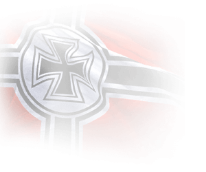

<div class="card-group mt-4">
    <div class="card bg-dark text-white">
        
        <div class="card-img-overlay">
            <h5 class="card-title text-premium"><i class="ship-icon icon-BB"></i> VIII Tirpitz</h5>
            
        </div>
        <div class="card-img-overlay no-display p-lg-5">
            <p><i class="icon-battle"></i> Battles : 187</p>
            <p><i class="fas fa-flag"></i> Winrates : 58%</p>
            <p><i class="icon-sunk"></i> Ships Sunk : 179</p>
            <p><i class="fas fa-star"></i> Experience : 3372</p>
        </div>
    </div>
</div>